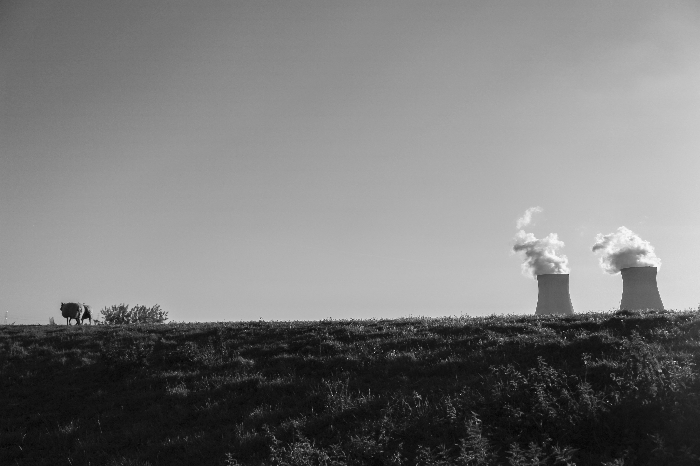
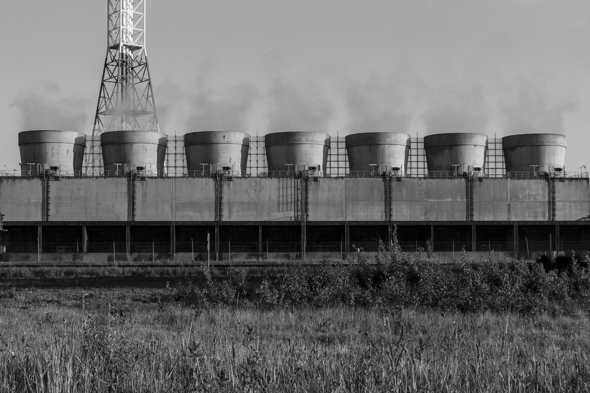

De Jager werd al snel gepromoveerd in zijn jonge jaren, dit kwam omdat hij de perfecte tussenpersoon was voor de baas van Saybolt. Manuel had veel verstand van de import en export business, dit had Haveman ook maar te weinig om er iets mee te doen. Manuel werd dus het rechterhand van Haveman, samen gingen ze opzoek naar internationale klanten om zo cocaïne te kunnen importeren en de Europese dealers blij te maken. Voor ze het wisten zaten ze midden in de business en kwam het geld binnenrollen, dit omdat er heel veel vraag is naar kleine bedrijven die meedoen aan deze soort praktijken. Haveman had heel de Have in zijn handpalm, dit was ook het moment dat hij zijn bijnaam kreeg: Boktron Haveman. Omdat de business zo goed ging wou Manuel meer krijgen dan alleen 20% want uiteindelijk was hij wel de man die alles had geregeld, dit schoot in het verkeerde keelgat bij Haveman. Manuel probeerde Haveman te overtuigen maar zonder enig succes, het was zelfs zo erg dat hij Manuel niet eens meer 100% meer kon vertrouwen. Manuel was het rechterhand van Boktron Haveman maar dit kon niet verder als er geen volledig vertrouwen was tussen de 2, dus Haveman ging dingen beginnen nakijken. Normaal gezien deed hij dit nooit, maar plotseling zag hij dat er fraude was gepleegd. Haveman is 2 maanden na dit gebeuren terug gevonden in de Schelde, en alles verwees naar Manuel.
 